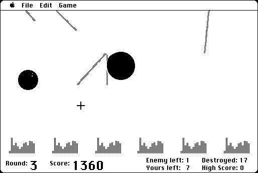

Download
missile-23.zip (25K) Missile 2.3 repackaged into a zipped hfs disk image and checksum file. The disk image can be mounted with Mini vMac. Includes source code.
missile-23.bin (12K) Missile 2.3 application in the original format.
copyright: Robert P. Munafo
mod date: Jan 21, 2003
license: GPL
official url :
Missile
A simple version of "Missile Command", from 1984. Described as "the only full-screen game that runs on every Mac model in its 20 year history". Source code is available.

If you find these downloads useful, please consider helping the Gryphel Project, which hosts them.
Here are the md5 checksums for the downloads, signed with Gryphel Key 5:
--------- GRY SIGNED TEXT --------- ca8a5854e760c33af3d2f714b4caf1e9 missile-23.zip 8289522899075d2c747c1719874aba17 missile-23.bin ------- BEGIN GRY SIGNATURE ------- Gry/4Xa8CFcUzxdN/JpUb3GiSeknSrrDX5kZIjclIX1sOSyh2duwKKMM3WYF0H93 deKbGoVLshIhNaQyZ0GQaASpr552KpI4DOETN5VfQo+DR3jNUivLxzQu60Kv4I74 JocDAYyWq+vdLuuh2QOul0MR6SICALAncJB3y0K1Z5Kvv/2VULrrg3qNvoG430R3 -------- END GRY SIGNATURE --------